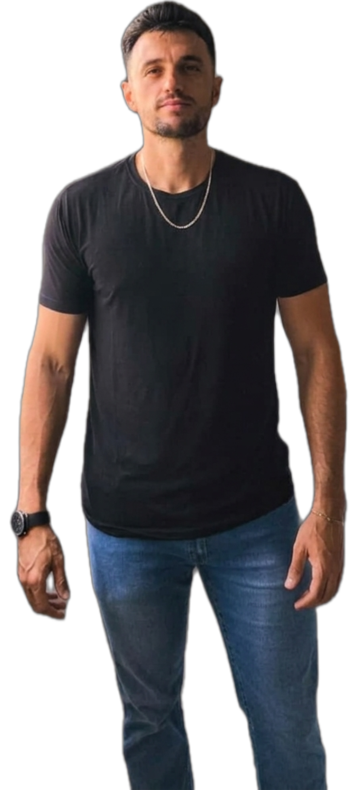
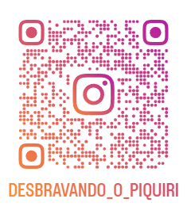
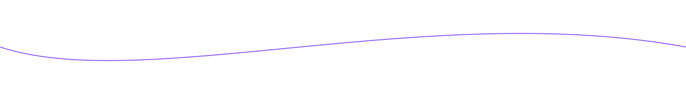

Sou Engenheiro Mecânico, formado pela UNIOESTE-PR.
Mestre em Agronomia pela UNICENTRO-PR
Resido em Santa Maria do Oeste-PR
Atualmente trabalho no sitio com as culturas de soja, milho e feijão.
Estou cursando Big Data no Agronegócio no CEDETEG, em Guarapuava-PR
Meu objetivo é aprender novas ferramentas para aplicar no campo.

Desenvolver habilidades para extração e processamento de dados;
Ter autonomia no trabalho;
Fazer dinheiro pra poder investir em projetos e lazer;
| Categoria | Habilidade | Descrição | Aplicação |
|---|---|---|---|
| Tecnica | Dominio de cálculo | Trabalho com equações matemáticas; análise de regressão | Dissertação de mestrado |
| Vivência no campo | Desde criança trabalhando no sítio | Dominio da produção de soja, milho, feijão, aveia, cobertura de inverno, etc. | |
| Projetos mecânicos e SólidWorks | Desenvolvimento de projetos mecânicos e modelagem 3D | Entender sobre sensores, motores, elétrica, limitações de projeto e usos práticos | |
| Conhecimento com experimentação agrícola | Trabalho durante o mestrado em agronimia com experimentação agrícola | Entender sobre as limitações, aplicações e uso da experimentação no agro | |
| Soft Skills | Foco | Bastante focado na entrega de resultado | Menor distração com resultados que não agredam valor |
| Comunicação | Aberto a novas ideias para agregar resultado | Maior colaboração e entrega de valor |
Gosto de churrasco, cerveja e futebol
Em 2020, durante a pademia, formamos o grupo dos caiaqueiros de Santa Maria do Oeste-PR

